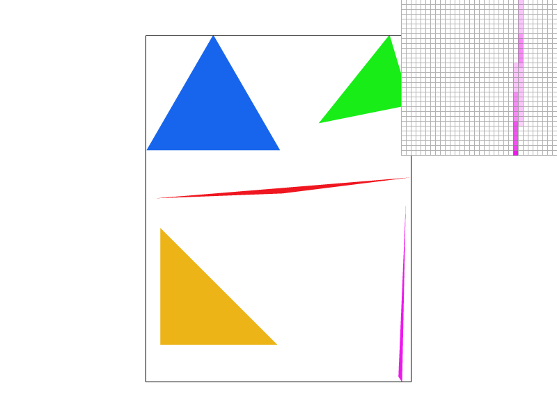

CS184 Project 1
Matthew Tang, Kaitlyn Lee
Task 1
Task 1 involved rasterizing triangles. We are given 3 vertex coordinates and a color to rasterize the triangle. We can do so by checking if a pixel is within the triangle, and if it is then we can fill it with that color. As shown in lecture, the way to determine if a pixel falls within the interior of the triangle is to do form a line equation. We select 2 vertex points to form the line equation and plug in the target point. One slight problem is that the sign of the result means different things depending on the order of the vertex points. A simple solution is to compute the same line test for the third unused triangle vertex point. If the target point and third vertex point yield answers of the same sign, then the target point falls within the triangle (since we know the third vertex point must be on the correct side).
Another thing to consider is efficiency of this method. Our original method finds the maximum and minimum x and y coords which serves as a bounding box any point the triangle could contain. Then we can just check every single coordinate in that bounding box.

[EXTRA CREDIT] The original method of rendering triangles is inefficient. We needlessly search every single pixel in the bounding box. Since a triangle is a convex shape, meaning all of the pixels in a row that represent the interior of a triangle are contiguous. This means that once we leave the interior, the rest of the pixels in that row must be in the exterior. We can keep track of this using a boolean that is set to true if we enter the interior and once we leave the interior, we can break out of the loop. We ran time trials of the dragon SVG file (test3.svg). The changes resulted in approximately a 15% speedup.
Task 2
In Task 2, we aim to solve the aliasing problem with supersampling. Supersampling samples multiple positions within a pixel and then averages them together, reducing the prevalence of jaggies.
We had to modify our sample buffer to fit the number of pixels of the images times the supersampling rate. All sample buffer array accesses also had to be updated. For our rasterize triangle method, we added 2 more for loops since we need to sample an arbitrary number of times within the pixel in both the x and y direction. We made sure to update the fill_pixel method to make sure the correct element in the buffer was updated. This method visibly reduced aliasing quite effectively as shown below.

Left: 1, Middle: 9, Right: 16
In the left, we can see without supersampling that the triangle is literally disconnected since it is too skinny and the edge would be too small (sub-pixel, too high frequency). When we supersample, we can sample multiple positions within that pixel. This creates lighter colored pixels since they are averages of supersamples that contain nothing and some that are of that triangle's color. In the right image, the triangle is fully connected and looks much better.
Task 3
In Task 3 we implement transforms. This allows us to render a robot, where we apply transforms to body parts. In my modified robot, I added two extra rotations for each arm segment. This allowed the arm segments to bend so the robot is putting its arms up. I also had to adjust the translate transforms accordingly so the spacing looked correct. The svg file can also be found at proj1/docs/my_robot.svg
Task 4
Barycentric coordinates can be used to interpolate color values in triangles. We can notice that any position within a triangle is a linear combination of the 3 vertices. We can assign coefficients alpha beta gamma to each vertex to indicate how much that vertex is contributing to get our target location. In this case, the coefficients represent how much of each vertex color should be used, creating a smooth color interpolation.
In the image below, a triangle with vertices of color red green and blue are shown. Barycentric coordinates create the color interpolation, as points within the image are linear combinations of red green and blue (the vertices).

This is an interpolated image of a circle of colors.